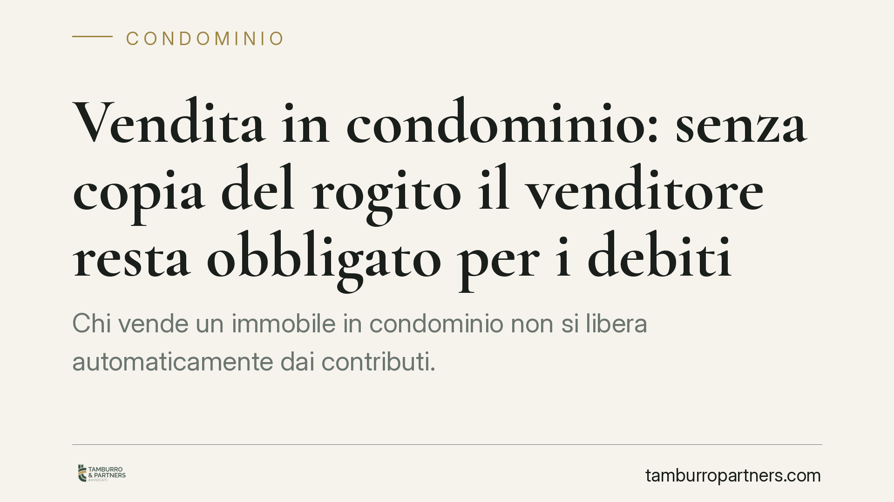

Vendita in condominio: senza copia del rogito il venditore resta obbligato per i debiti
Chi vende un immobile in condominio non si libera automaticamente dai contributi. Il Tribunale di Treviso ha ribadito che, senza la trasmissione all'amministratore della copia autentica del rogito, il venditore resta corresponsabile con l'acquirente per le spese. Un adempimento formale che ha conseguenze economiche molto concrete.

Il caso
Un ex proprietario, dopo aver ceduto la propria unità immobiliare, si è visto richiedere dall'amministratore il pagamento di contributi condominiali maturati successivamente alla vendita. La sua difesa era intuitiva: "Non sono più il proprietario, il debito riguarda chi ha acquistato".
Il Tribunale di Treviso ha respinto questa impostazione. Il punto non è chi sia il proprietario sostanziale, ma se il condominio sia stato messo formalmente in condizione di saperlo. E per il giudice quella condizione si realizza solo con la consegna della copia autentica dell'atto di trasferimento.
Inquadramento normativo
La disciplina si trova nell'art. 63, comma 5, delle disposizioni di attuazione del Codice civile, introdotto con la riforma del condominio operata dalla Legge n. 220/2012.
La norma prevede che chi cede diritti su un'unità immobiliare resti obbligato, in solido con l'acquirente, per i contributi maturati fino al momento in cui trasmette all'amministratore "copia autentica del titolo che determina il trasferimento del diritto".
Due elementi vanno letti con attenzione. Primo: la responsabilità è solidale, cioè l'amministratore può pretendere l'intero importo indifferentemente dal venditore o dall'acquirente. Secondo: il momento liberatorio non coincide con la firma del rogito né con la trascrizione, ma con un atto ulteriore e specifico, la consegna all'amministratore della copia autentica.
La pronuncia di Treviso si inserisce in un orientamento consolidato: la comunicazione informale, la conoscenza di fatto del passaggio di proprietà o la semplice trascrizione nei registri immobiliari non bastano. Serve l'adempimento formale indicato dalla legge.
Implicazioni pratiche
Per il venditore la conseguenza è netta. Finché non consegna la copia autentica del rogito all'amministratore, continua a rispondere delle spese condominiali che maturano dopo la vendita, anche se non abita più nell'immobile e non ne trae alcun beneficio.
È un rischio spesso sottovalutato. Molti danno per scontato che sia il notaio o l'acquirente a occuparsi della comunicazione, oppure ritengono sufficiente un'e-mail all'amministratore. Non lo è. La legge richiede un documento preciso, con caratteristiche formali definite.
Per l'amministratore la sentenza offre uno strumento di tutela del condominio: fino alla ricezione della copia autentica, può legittimamente rivolgere le richieste di pagamento anche al vecchio proprietario, che resta un debitore aggredibile a tutti gli effetti.
Attenzione anche alla dinamica interna tra le parti. Il venditore che sia costretto a pagare mantiene comunque il diritto di rivalsa verso l'acquirente per gli oneri di competenza di quest'ultimo. Ma la rivalsa presuppone un secondo procedimento, con tempi, costi e incertezze che si sarebbero potuti evitare con un semplice adempimento tempestivo.
Cosa fare in concreto
- Consegnate la copia autentica del rogito all'amministratore subito dopo il trasferimento, non limitandovi a comunicazioni informali o via e-mail.
- Conservate la prova della trasmissione: inviate il documento con modalità tracciabili (raccomandata o PEC) e archiviate la ricevuta, che sarà decisiva in caso di contestazione.
- Verificate in sede di compravendita chi si assume l'onere della comunicazione, inserendo se possibile una clausola espressa nel contratto o nel verbale di consegna.
- Controllate la posizione debitoria dell'unità prima del rogito, chiedendo all'amministratore un prospetto aggiornato degli oneri maturati e non ancora versati.
- Se ricevete richieste per spese successive alla vendita, non pagate senza prima verificare l'avvenuta trasmissione del titolo e i termini di eventuale rivalsa.
La vicenda mostra come un adempimento apparentemente burocratico produca effetti patrimoniali rilevanti. La distinzione tra proprietà sostanziale e responsabilità verso il condominio non è un tecnicismo: è la ragione per cui un venditore può trovarsi a pagare bollette condominiali di un immobile che non possiede più.
Consigliamo di trattare la comunicazione del rogito all'amministratore come parte integrante del processo di vendita, alla stregua di qualsiasi altro adempimento connesso al trasferimento immobiliare.
---
Contributo informativo a cura di Tamburro & Partners - Avv. Giuseppe Tamburro. Non costituisce parere legale.
Ogni condominio ha una storia a sé.
Se gestisci un'amministrazione e vuoi un confronto su una specifica questione condominiale, scrivi allo studio. Ti rispondiamo entro un giorno lavorativo.